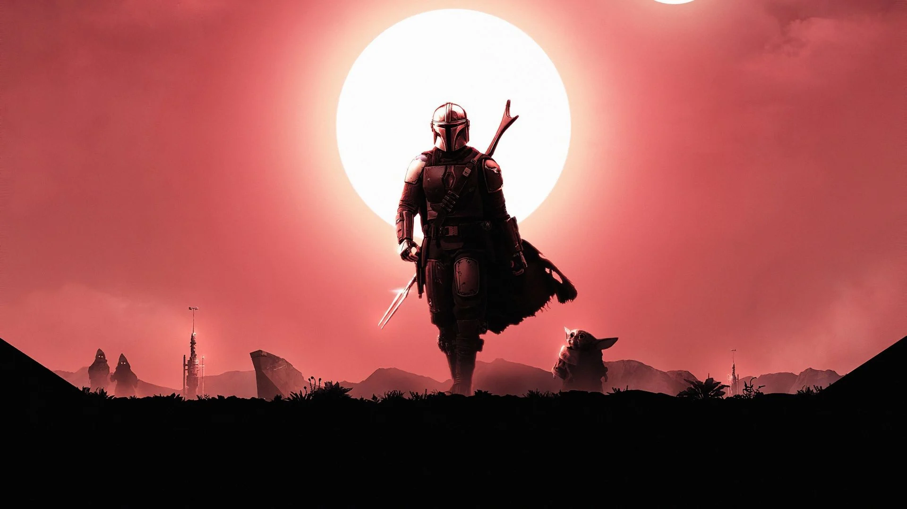
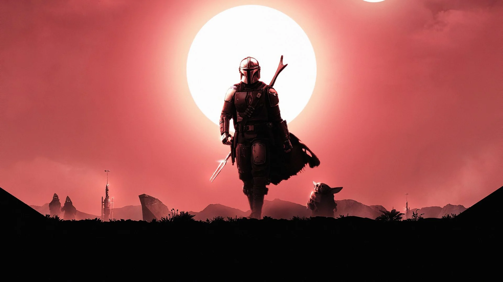

Star Wars é uma franquia do tipo space opera estadunidense criada pelo cineasta George Lucas, que conta com uma série de nove filmes de fantasia científica e dois spin-offs.
Cartas
...
...
Cabelo:
"..."
Pele:
"..."
Olho:
"..."
Genero:
...
Data de Nascimento:
...
StarWarsWiki
Star Wars, também conhecido como Guerra nas Estrelas, é uma das franquias de ficção científica mais populares do mundo. Criada por George Lucas, a saga começou com o lançamento do filme "Star Wars: Episode IV - A New Hope" em 1977. A história se passa em uma galáxia fictícia, onde uma luta épica entre as forças do bem, representadas pelos Jedi, e as forças do mal, lideradas pelos Sith, se desenrola.
Curiosidade: O personagem icônico, Darth Vader, interpretado por David Prowse e dublado por James Earl Jones, originalmente não deveria ter aquela voz profunda e imponente. A voz de Darth Vader foi dublada por Jones durante as filmagens, o que contribuiu significativamente para tornar o vilão tão memorável. A voz de James Earl Jones deu a Darth Vader uma presença ameaçadora que se tornou lendária no cinema.
Trilogia Original: A saga original de Star Wars consiste em três filmes lançados nos anos 70 e 80: "Episódio IV: Uma Nova Esperança", "Episódio V: O Império Contra-Ataca" e "Episódio VI: O Retorno de Jedi". Eles
Prequels: George Lucas lançou uma trilogia de prequels nos anos 90 e 2000, explorando a ascensão de Darth Vader. Os filmes são "Episódio I: A Ameaça Fantasma", "Episódio II: O Ataque dos Clones" e "Episódio III: A Vingança dos Sith".